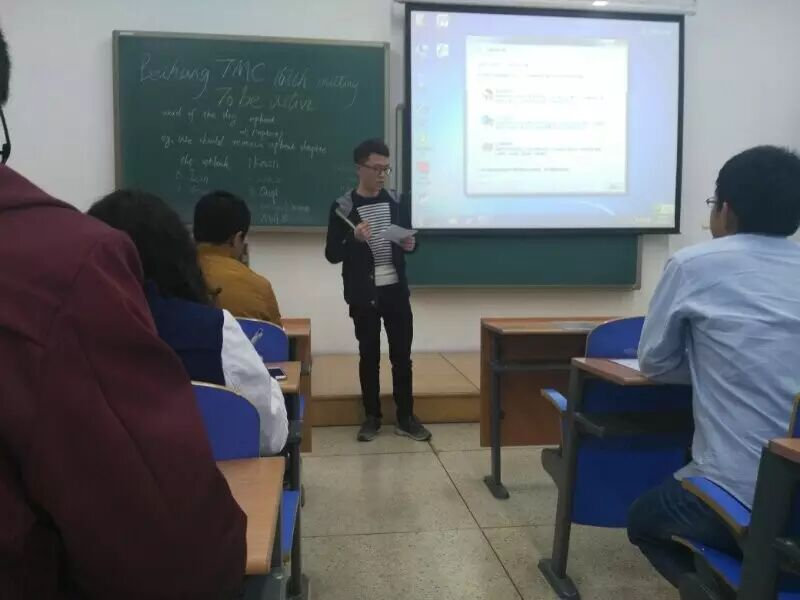
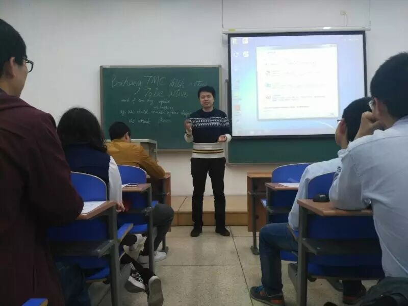
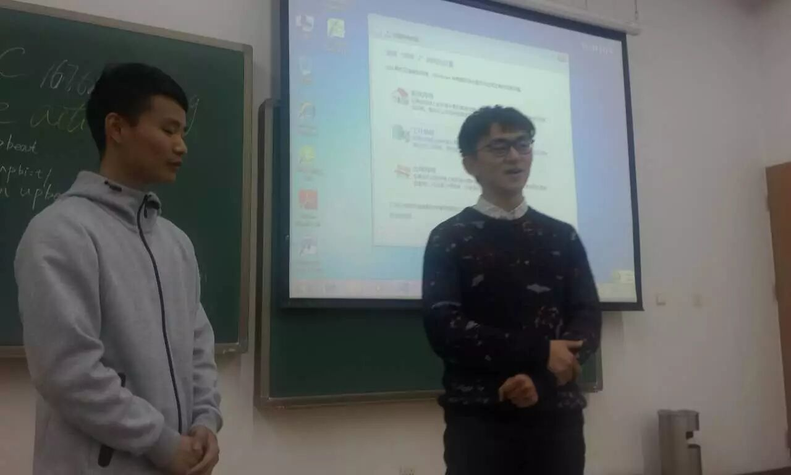
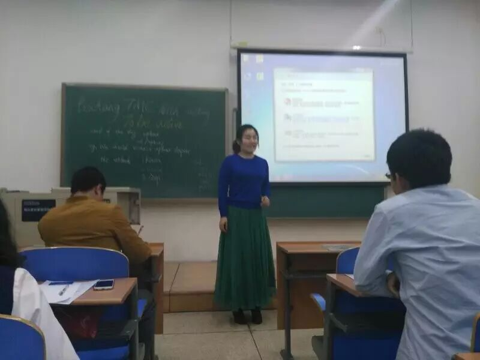
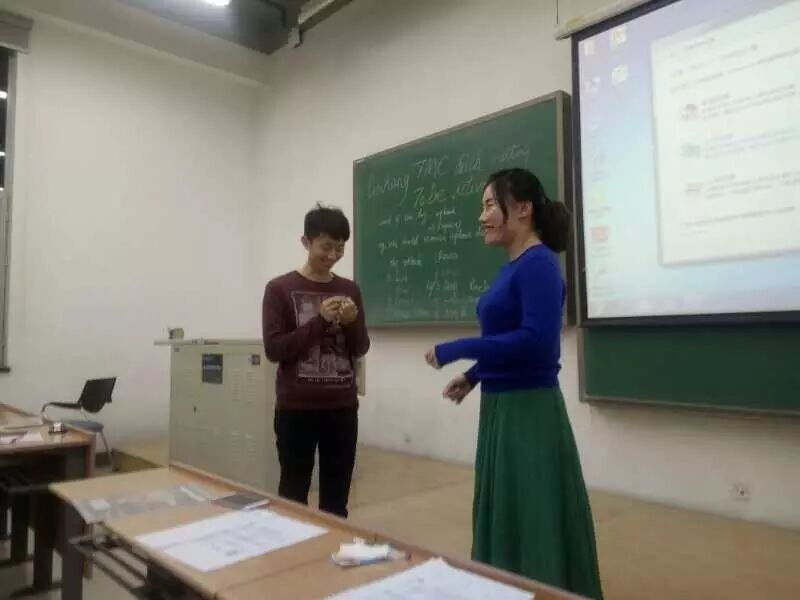
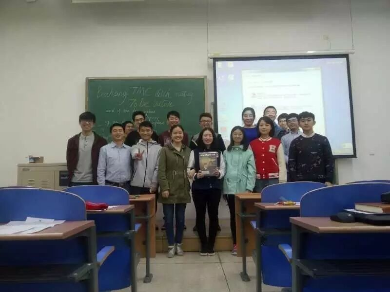

Sometimes,I want to thank you everyone who are support to me moving on Toastmaster journey, They are so kiddness for me, They are so kiddness for everyone who want to be confident and powerful . I promised to myself that i will never give up to attend Toastmaster's every meeting, To prepare for and fulfill meeting assignments, To serve my club as an offficer when called upon to do so...
It is unforgettable that everyone frist time attend Toastmaster's meeting,Frist time introduce youself in english, Frist time deliver your speech at stage,Frist shake hands with girls. There are a lot of beauty memories to share with. Tonight, We also have many guests attend to 167 meeting of BeiHang ToastMaster.

John(Table topic master) said: I think being active is very important for us,If you always want to wait for others to give you something or tell you some about something, you will be passive and you are more likely to loss. As far as I am concerned, being active to get information and quickly understand the situation is the key to success. No one have the time and the patience to help the one who are passive and the one who always wait and do nothing. I want to express the feeling and this understanding to all of us, So i decide to use this theme. Now let's begin our table topic part:
1. Now you have to make a PPT to introduce your product in your company, But you have inactive don't want to do it, how do you deal with this situation?

Keven was so good at deal with this situation,If i don't make a PPT to introduce my produce,Do you want to fire me? Come on,You got in trouble!
2. You are going to attend an important meeting but the meeting is a little boring for you. You can leave the meeting and no one will notice you. How do you choose, still listening or leaving?

Lan says he have been experienced some boring meeting before, At that time he will choice do something own and ignore the meeting. Lan is a guest to attend this meeting, But he delivered his excellent speech for us and we can see that he is a master within english learning. He not only attracted everyone's notice but also our president Amy offer him to join our club.
3.You are in a group, every time there is a task, you always tend to take the easiest part, Gradually, other people in the group don't want to work with you, How do you make a change?

Qiqi says she will reflect herself what going on with her, Frist step: Problem Identification then make some plan to deal with this problem,God helps those who helps themselfs. She is right!
4. You are couples, and you quarreled bitterly with each other because she is always doing housework and you never do it. She thinks you don't love her and she is very tired. What will you do? Being active to apologize or don't talk to her either?
Fiona brought her hige school classmate Cristina going to stage, Cristina comes from BeiJing University. They are a lovely couples, Love is power, Give our energy to fighting everyday!
5.You are the boss and you are the employee, your boss think you are inactive in the work and he will fire you, what will you do next?

Milton was a serious boss and he never let employee have time to rest, So he want to fire Gasby immediately, But Gasby is a flexible man, He also play with his boss, Fighting for his job! Finally,He did it. His boos forgive him and waiting for his program, Wish Gasby doesn't let his boss down again.
6.Your friend has borrowed some money from you and he always delays paying back to you. Now you need money to invest, you need to talk to your friend now.
Star is a new guest here, But her spoken english is very good. May is so foxy! She says she need to pay for her food、traffic、recreation and school study stuff, So Star can't ask May return her money immediately,They are play with each other and May promised to Star will return her money in next month.
7. A girl is beautiful / A boy is very excellent, you fall in love with her / him for a long time and she / he is still single, but you are inactive and very shy to tell about your feelings, will you still love her or him secretly?

Rocky and Qiqi brought us a wonderful and funny speech, They are both happy to play their roles.Qiqi says Rocky's eyes are like star in blue sky. Aha, What is the next step? Maybe you need to see by yourself.
Finally, Give a big applause to everyone!

https://mp.weixin.qq.com/s/X7tzoVoTHmjZZoxej5yywg
本页为抢救式本地归档，图文已永久保存。